T.N.T. — AC/DC
Bateria • 27 capturas • 4/4 e 2/4 • 127 BPM
Início (s): · Compasso 1
Trecho 01
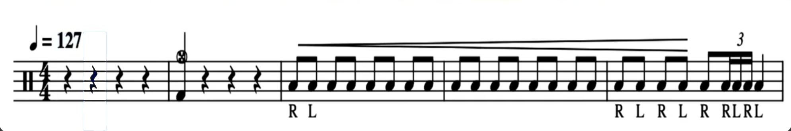
Início (s): · Compasso 6
Trecho 02
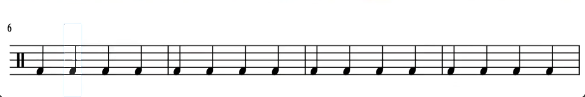
Início (s): · Compasso 10
Trecho 03
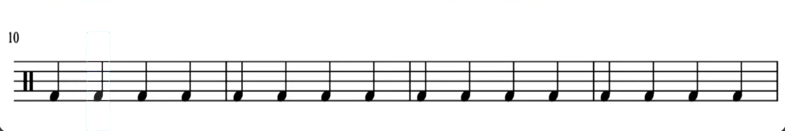
Início (s): · Compasso 14
Trecho 04
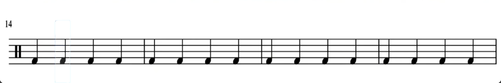
Início (s): · Compasso 18
Trecho 05
Início (s): · Compasso 22
Trecho 06
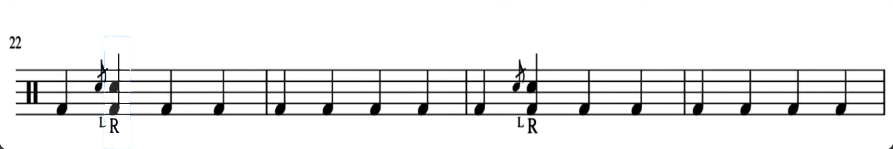
Início (s): · Compasso 26
Trecho 07
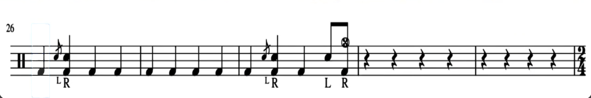
Início (s): · Compasso 31
Trecho 08
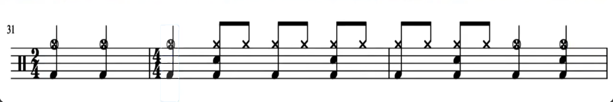
Início (s): · Compasso 34
Trecho 09
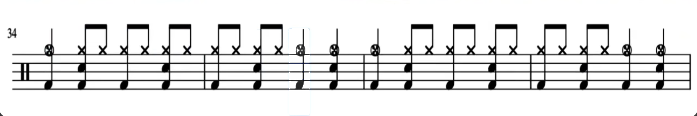
Início (s): · Compasso 38
Trecho 10
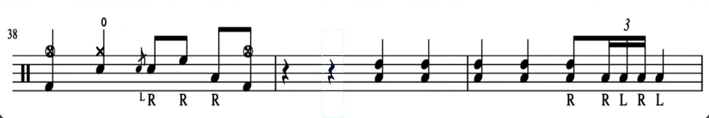
Início (s): · Compasso 41
Trecho 11
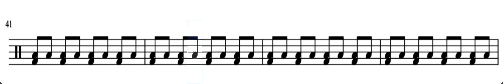
Início (s): · Compasso 45
Trecho 12
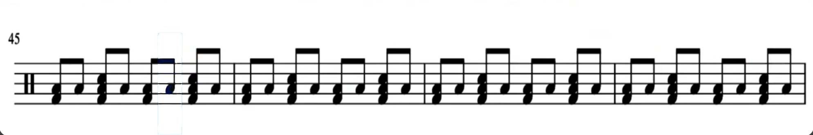
Início (s): · Compasso 49
Trecho 13
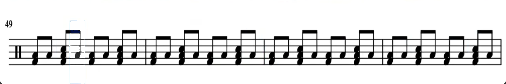
Início (s): · Compasso 53
Trecho 14
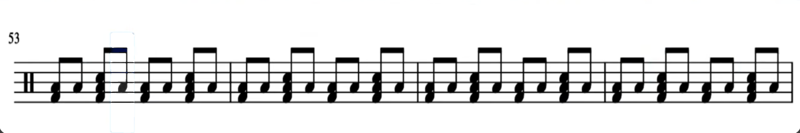
Início (s): · Compasso 57
Trecho 15
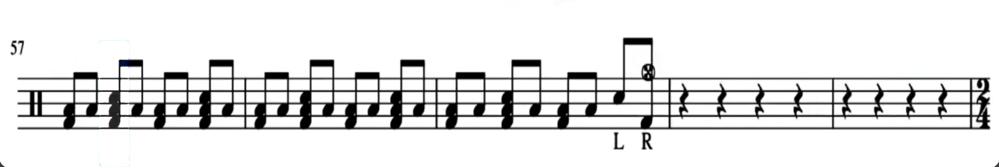
Início (s): · Compasso 62
Trecho 16
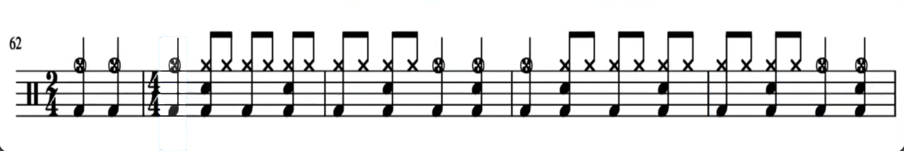
Início (s): · Compasso 67
Trecho 17
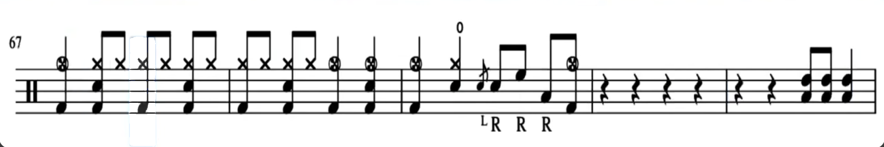
Início (s): · Compasso 72
Trecho 18
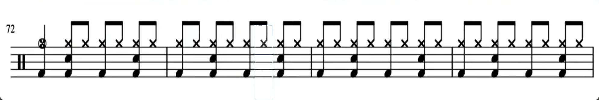
Início (s): · Compasso 76
Trecho 19
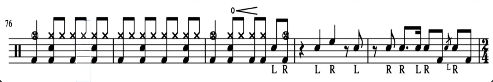
Início (s): · Compasso 81
Trecho 20
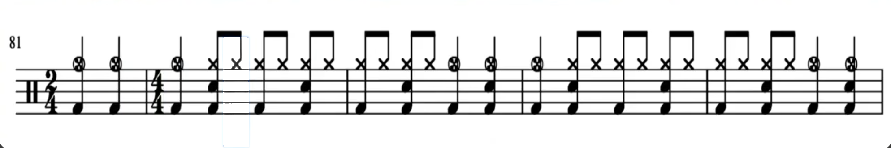
Início (s): · Compasso 86
Trecho 21
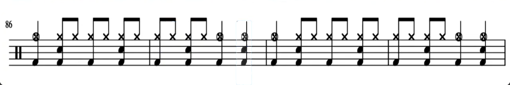
Início (s): · Compasso 90
Trecho 22
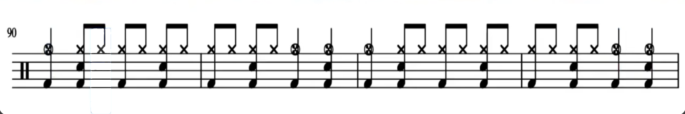
Início (s): · Compasso 94
Trecho 23
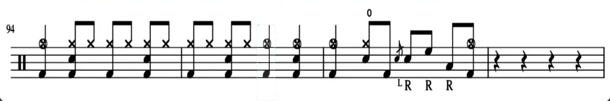
Início (s): · Compasso 98
Trecho 24
Início (s): · Compasso 98
Trecho 25
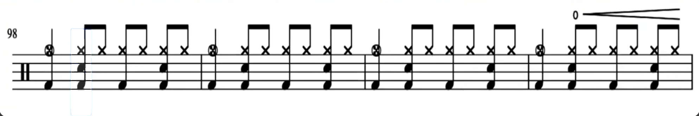
Início (s): · Compasso 102
Trecho 26
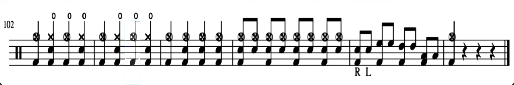
Início (s): · Compasso 102
Trecho 27
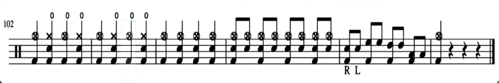
27 capturas em ordem: o trecho inicial recebido no chat e os 26 prints do Desktop. As notas permanecem em imagem; títulos e anotações são editáveis. As duas últimas capturas semelhantes foram mantidas.
Anotações de estudo
Escreva aqui suas observações, dúvidas e metas de estudo.